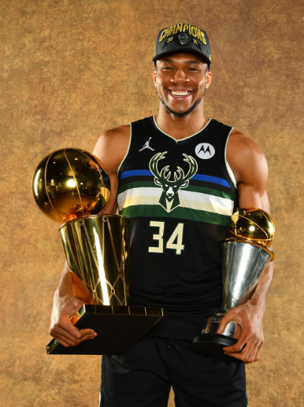

Giannis Antetokounmpo
Forward
Basic Info
Age: 27Height: 211 cm
Weight: 110 kg
Position: Power forward
Current team: Milwaukee Bucks
Proffesional career
Filathlitikos (2011-2013)
In 2011, Antetokounmpo played with the senior men's team of
Filathlitikos in the semi-pro Greek B Basket League (Third Division) during the 2011–12
season.
In December 2012, a few days after turning 18, Antetokounmpo signed a four-year deal with
Spanish club CAI Zaragoza, reportedly including NBA buyouts after each season. A number of
other major European clubs had been interested in adding him, including Barcelona and Efes.
During the 2012–13 Greek A2 League season, Antetokounmpo shot 46.4% from the field (62.1% on
two-point field goals), 31.3% from three-point range, and 72.0% from the free throw line, while
averaging 22.5 minutes per game. Over 26 games, he averaged 9.5 points, 5.0 rebounds, 1.4
assists, and 1.0 blocks per game. He was also selected by the coaches as a special
participant in the 2013 Greek League All-Star Game. Even though he was not actually selected as
an all-star, the coaches let him play in the game as a treat for the fans.
Milwaukee Bucks
On April 28, 2013, Antetokounmpo officially made himself eligible for the 2013 NBA draft. He
fulfilled his draft projections as a first-round pick by being selected 15th overall by the
Milwaukee Bucks. On July 30, 2013, he signed his rookie scale contract with the Bucks.
Antetokounmpo made his NBA debut on October 13, 2013, at the age of 18 years, 311 days, as one
of the youngest NBA players ever. He averaged 6.8 points, 4.4 rebounds, 1.9 assists, 0.8 steals,
and 0.8 blocks in 77 appearances during his rookie season. He scored in double figures 23 times
and grabbed at least 10 rebounds twice, with both efforts resulting in double-doubles. He
finished the season with 61 total blocks, which led all NBA rookies and was the seventh-most by
a Bucks rookie in franchise history. He was selected to participate in the Rising Stars
Challenge at NBA All-Star Weekend in New Orleans, where he tallied nine points, two rebounds and
two assists in 17 minutes. At the season's end, he was named to the 2013–14 NBA All-Rookie
second team.
NBA Champions
Antetokounmpo returned in time for the finals against the resurgent Phoenix Suns. In his Finals debut, he recorded 20 points and 17 rebounds in a 118–108 loss. He then registered back-to-back games with at least 40 points and 10 rebounds in a Game 2 loss and a Game 3 victory, joining Shaquille O'Neal in 2000 as the only players to reach those numbers in consecutive Finals games. He also joined Jordan, O'Neal and James as the only players to put up at least 40 points in back-to-back Finals games in the previous 50 years. The Bucks continued their comeback after having lost the first two games of the series, prevailing in the next four contests. In Game 6, Antetokounmpo recorded 50 points, 14 rebounds and 5 blocks as the Bucks clinched their first championship in 50 years. He posted series averages of 35.2 points, 13.2 rebounds, 5.0 assists, 1.2 steals and 1.8 blocks, and was subsequently named NBA Finals MVP by unanimous vote. At 26 years, 226 days old, he is the youngest since Kawhi Leonard in 2014 to be named Finals MVP, as well as the first European since Dirk Nowitzki in 2011 to do so. Antetokounmpo also joined Michael Jordan and Hakeem Olajuwon as the only players to have won the MVP, Finals MVP, and Defensive Player of the Year awards during the span of their careers.
